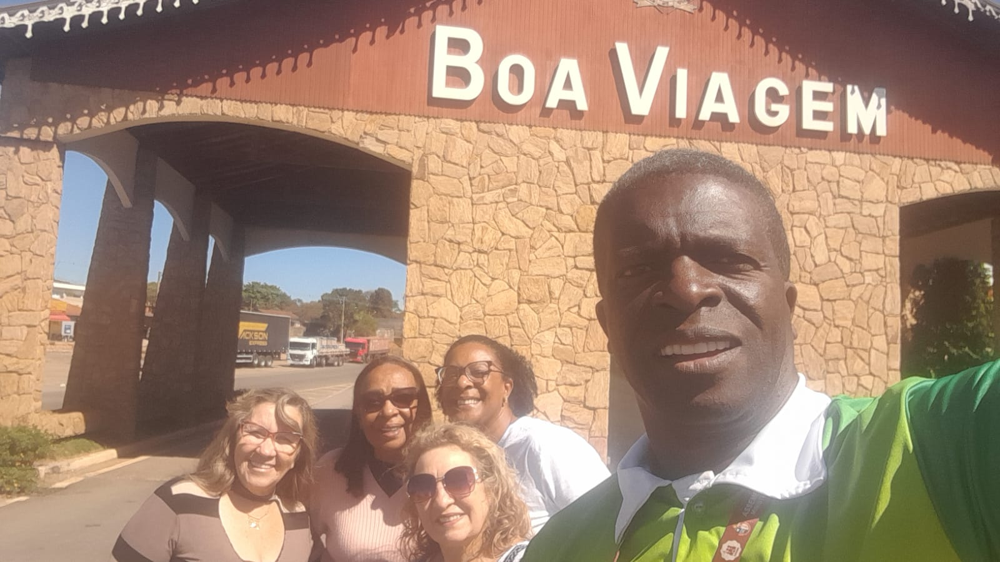

Mais popular
City Tour Completo
Centro histórico, mirantes e pontos culturais
Passeio completo pelos principais cartões-postais de Poços de Caldas, com paradas nos mirantes, praças históricas, Cristo Redentor e pontos de contemplação.
- Duração: 3 a 4 horas
- Ideal para famílias e grupos de excursão
- Nível de esforço: leve
- Guia com microfone para grupos grandes